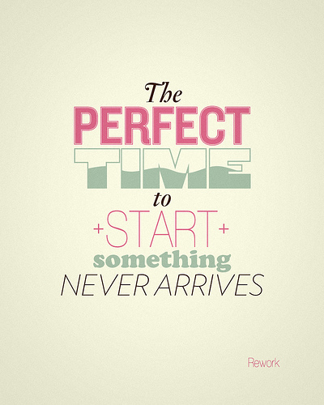

JavaScript Programmer's Reference
Cliff Wootton
Wrox Press Ltd.
JavaScript Programmer's Reference
About the Author
Cliff Wootton lives in the south of England and works on multimedia systems and content management software for large data driven web sites. Currently he is developing interactive TV systems for BBC News Online in London ( http://www.bbc.co.uk/news ) and previously worked for other commercial broadcasters on their web sites. Before that he spent several years developing geophysical software and drawing maps with computers for oil companies.
Cliff is married with three daughters and a growing collection of bass guitars.
Acknowledgements
It's hard to believe I've actually reached the stage of writing the introductory pages to this book. It's been a long process and I don't think I would have reached this point without the help of Tim Briggs at Wrox, who very gently urged me onwards and gave me encouragement when I needed it.
Tim's contribution to this project was vital to its success because he developed the process which converted my DOCBOOK output into something the Wrox editors could turn into a book. Tim also prepared the CD-ROM content from the same XML files; truly amazing!
Thanks also to all the other folks at Wrox who have helped, organised, checked and collated my material
to present it in the form you now see it. Grateful thanks to my reviewers, who in a very short time
provided me with some useful guidance and support; in particular Jon Stephens and Martin Honnen,
who also provided some amazingly clever example code fragments for use as examples.
There are many other people who contributed without realising it. In particular Nick Cohen (formerly of the BBC and now at Turner Broadcasting) who provided some helpful insights into TV set-top-box workings. Also Matt Karas and Emyr Tomos (both ex-BBC, now at Talkcast) who threw down the gauntlet of several interesting challenges for me to implement on the BBC News Online web site. I also wouldn't be sitting here if it weren't for Bruce Morris at Carlton Online. It was through the happy chance of an article I wrote for Bruce's Web Developer's Journal (WDJ) web site that led to Wrox contacting me and the BBC inviting me to do some JavaScript work. What an amazing thing the web is.
Most importantly I dedicate this book to my family. To my wife, Julie and my daughters Hannah, Lydia
and Ruth who kept me going with cups of coffee, hugs and the occasional giggle when they saw the
photograph of me for the front cover.
Introduction
The JavaScript language is constantly developing, and continues to increase in popularity. Its evolution into a general purpose scripting language from what started life purely for scripting web browsers, is a great success story. You can now find JavaScript interpreters in many different environments and there are sure to be other new and interesting uses for the language in the future, especially now that embeddable interpreters are available.
In this book, we have attempted to snapshot the browsers that exist currently, which need to be supported by web sites, and collate that information together in a form that has broad scope and is deep enough to be useful on a day-to-day basis. As the language is growing all the time, this is likely to be an ongoing task.
The Structure of the Book
To make it easy to navigate through the topics, titles describe the topic content and the topic type and are organized alphabetically. Where a topic might be referred to using several headings, a brief entry in the cross-reference at the end of the book shows the main topic for that subject.
I used a great deal of software automation to manage the book content and the whole thing was built in a database and exported as an XML file set using the DocBook DTD. There are now in excess of 3500 individual topics in this work. That is more than twice as many as we have room for in the printed book, so we’ve had to put a useful subset of the reference into the printed book, and the complete set of material onto the CD-ROM, which is available both in PDF and HTML formats. Some additional reference information that is not strictly part of the JavaScript language, but that you may find useful, is also included, such as country codes and MIME types.
Where we discuss an object all the important properties, methods, events, and any supporting material are broken out into their own topics, and these detailed entries are included on the CD. Where objects inherit properties and methods, they are listed in the object coverage, but to avoid duplication the information about the inherited properties is described as a member of the super-class. This slightly detracts from the lexical referencing but it saves space. In some cases these inherited properties/methods are deemed important enough to merit a cross-referencing entry of their own.
This allows us to indicate availability of features at a very fine level of detail. Within each topic we can also discuss bugs, gotchas, and areas of difficulty in a focused way.
Language syntax is illustrated by way of example code fragments that show how to access an object, method, or property. More extensive examples are given where necessary.
Because of the scoping rules, properties are available without the need for the window object to be specified as a prefix. Thus navigator as a topic is available under the window.navigator topic as well. Once you have found an entry topic, you can then use the cross-referencing listings to locate other related material.
The book content was developed inside a database system, which provided tools to relate topics. The benefit is a rich source of cross-referencing links between topics. The cross-reference in the printed book is complete; that is, it also includes entries found only on the CD. The italicized crossreferences in the printed book can also be found in the printed book.
We will now look at some of the 'features' of JavaScript programming, as an introduction to what topics in the book will address.